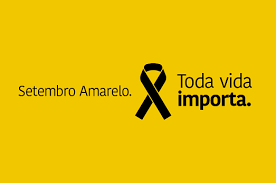

Bem-vindo à Nossa Campanha
Conheça a campanha de Setembro Amarelo e saiba como você pode ajudar a fazer a diferença.
Saiba MaisCampanha de Setembro Amarelo
Em setembro, focamos na campanha de prevenção ao suicídio, conhecida como Setembro Amarelo. O objetivo é conscientizar a população sobre a importância da saúde mental e oferecer suporte às pessoas que enfrentam crises emocionais.
O suicídio é um importante problema de saúde pública, com impactos na sociedade como um todo. Segundo dados da Organização Mundial de Saúde - OMS, todos os anos, mais pessoas morrem como resultado de suicídio do que HIV, malária ou câncer de mama - ou guerras e homicídios. Entre os jovens de 15 a 29 anos, o suicídio foi a quarta causa e morte depois de acidentes no trânsito, tuberculose e violência interpessoal.
Trata-se de um fenômeno complexo, que pode afetar indivíduos de diferentes origens, sexos, culturas, classes sociais e idades. Segundo dados da Secretaria de Vigilância em Saúde divulgado pelo Ministério da Saúde em setembro de 2022, entre 2016 e 2021 houve um aumento de 49,3% nas taxas de mortalidade de adolescentes de 15 a 19 anos, chegando a 6,6 por 100 mil, e de 45% entre adolescentes de 10 a 14 anos, chegando a 1,33 por 100 mil. As taxas variam entre países, regiões e entre homens e mulheres. No Brasil, 12,6% por cada 100 mil homens em comparação com 5,4% por cada 100 mil mulheres, morrem devido ao suicídio. As taxas entre os homens são geralmente mais altas em países de alta renda (16,6% por 100 mil). Para as mulheres, as taxas de suicídio mais altas são encontradas em países de baixa-média renda (7,1% por 100 mil). Embora alguns países tenham colocado a prevenção do suicídio no topo de suas agendas, muitos permanecem não comprometidos. Atualmente, apenas 38 países são conhecidos por terem uma estratégia nacional de prevenção do suicídio.
Para mais informações sobre como você pode ajudar ou buscar suporte, clique aqui.
